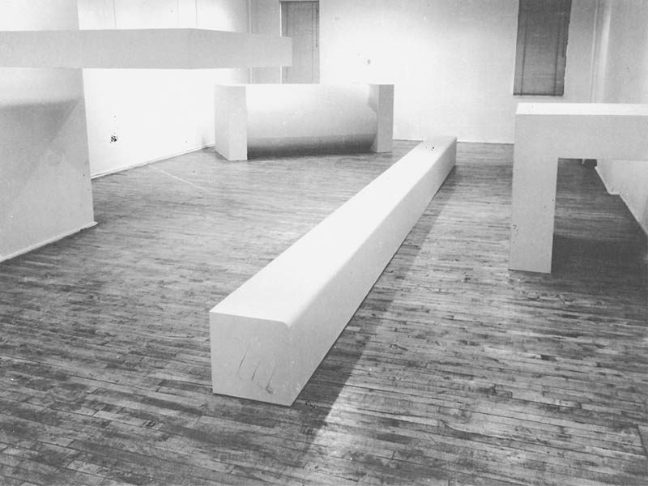

Bienvenidos a nuestra página dedicada al fascinante mundo del movimiento vanguardista en el arte del siglo XX.
El movimiento vanguardista fue una revolución cultural que transformó la manera en que percibimos el arte. Surgió en las primeras décadas del siglo XX y se caracterizó por su rechazo de las convenciones tradicionales y su búsqueda constante de la innovación y la experimentación en todas las formas de expresión artística.
Conozca a los artistas más influyentes del movimiento vanguardista, como Pablo Picasso, Salvador Dalí, Marcel Duchamp y Kazimir Malévich. Exploraremos sus obras maestras que desafiaron las normas establecidas y cambiaron para siempre el panorama artístico.
Descubra los diferentes movimientos vanguardistas, como el cubismo, el dadaísmo, el surrealismo y el suprematismo, cada uno con su propia filosofía y estética únicas. Explore cómo estos movimientos influyeron en la pintura, la escultura, la literatura y la música.
Sumérjase en nuestra galería de obras vanguardistas, donde podrá apreciar algunas de las piezas más emblemáticas de este movimiento. Aquí encontrará imágenes de obras de arte que desafían las convenciones y provocan reflexiones profundas.
